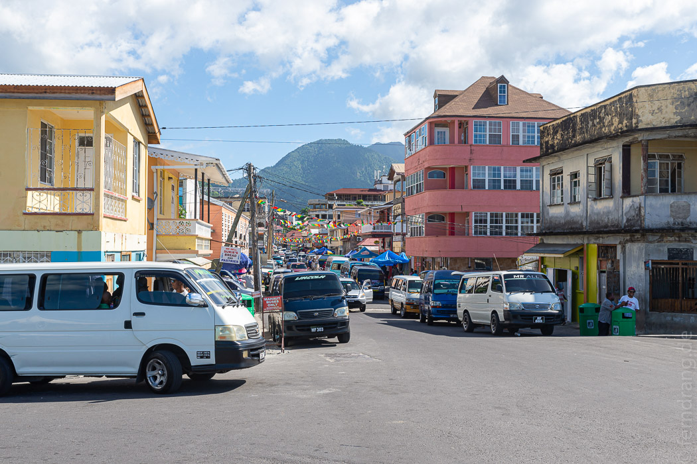
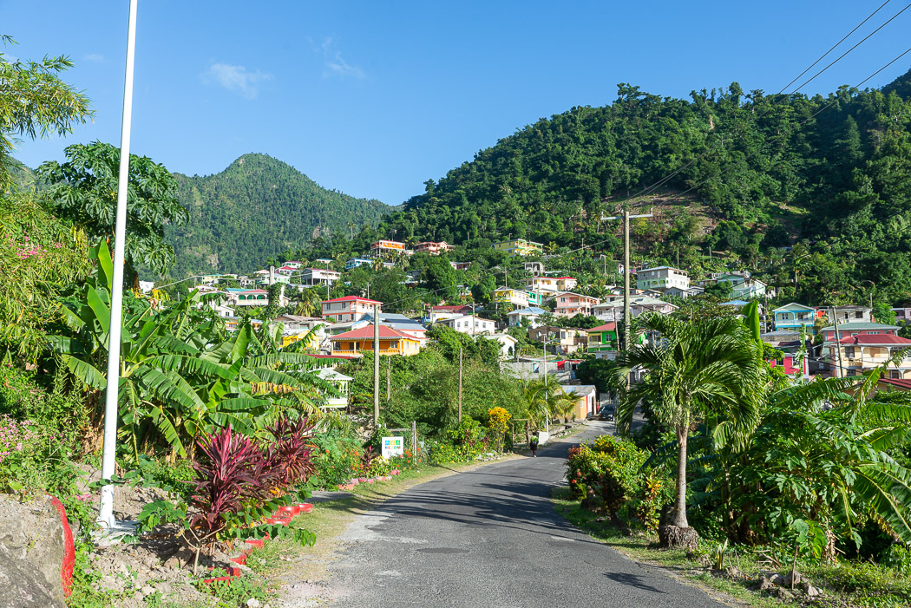
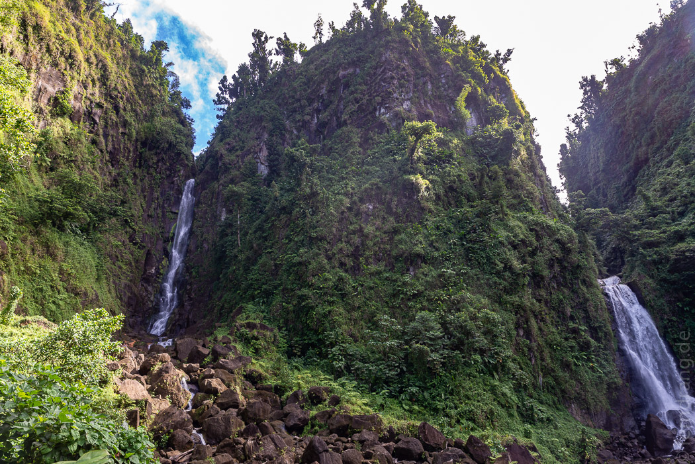
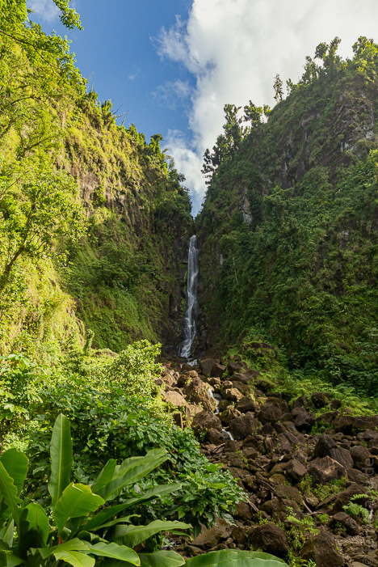
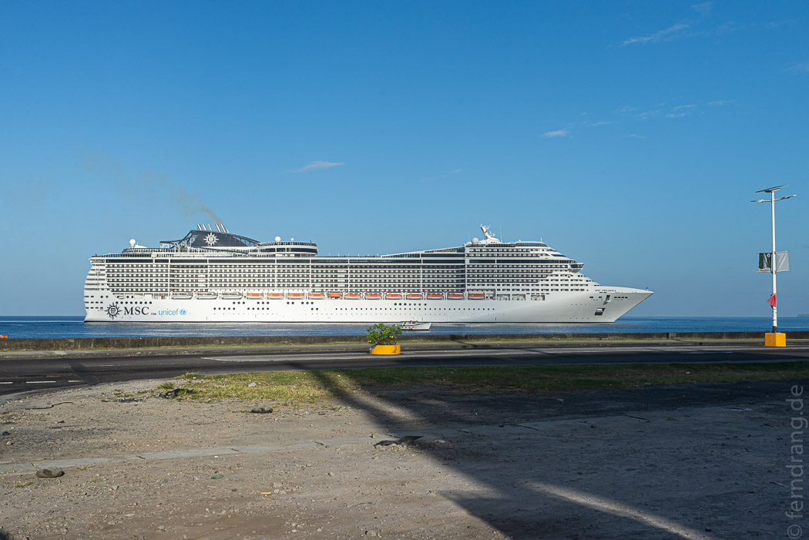
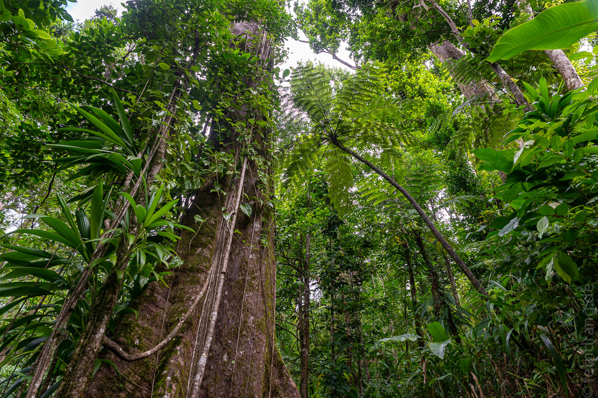
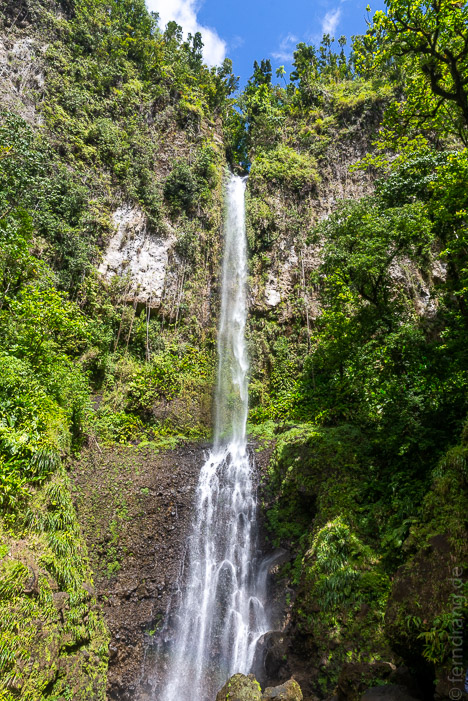
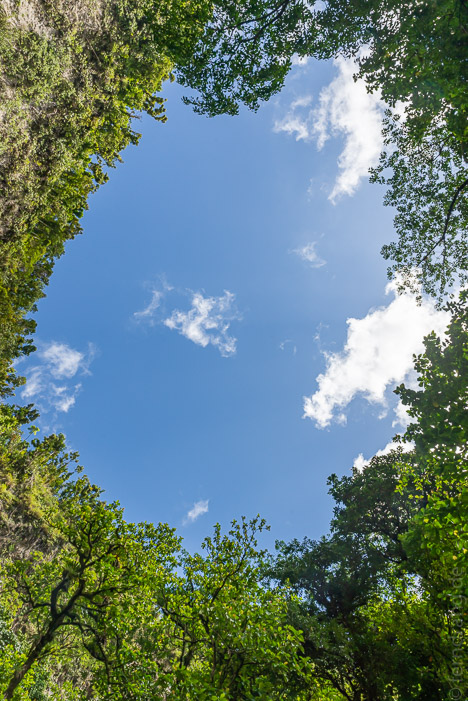
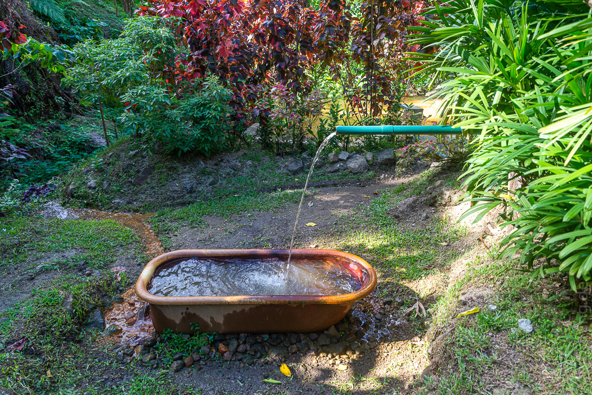

Die an der Westküste gelegen Hauptstadt Roseau ist der einzige nennenswerte Ort auf Dominica. In endlosen Serpentinen schraubt sich die Straße aus den Bergen im Inland zur Küste hinab. Die Gegend um Roseau ist relativ erschlossen und von hässlichen Industriebauten umgeben. Der Stadtkern ist auch nicht viel aufregender. Aber die Sehenswürdigkeiten des Roseau Valleys haben uns mehrfach angelockt.
 Die vielleicht bekannteste Sehenswürdigkeit der Insel sind die Trafalgar Falls. Der Zwillingswasserfall wird fast als Weltwunder angepriesen und gehört zur Shortlist der Kreuzfahrtschiff-Touristen, die hier ab und zu mal landen. Der Ausblick ist nett, aber der eigentliche Grund für die Berühmtheit ist eher die rollstuhlgerechte Zugänglichkeit auf dem fünfminütigen Spaziergang vom Parkplatz aus.
  Deutlich spannender war unser Ausflug zu den Middleham Falls. Die verstecken sich tief im Wald und geben sich dem Wanderer erst nach anderthalb Stunden preis. Erst führte der Weg immer höher durch den Wald, danach in einen runden, zugewucherten Talkessel. Das Rauschen des Wassers wurde immer lauter, doch durch das grüne Dickicht war bis zum letzten Moment nichts zu sehen. Erst auf einer kleinen Aussichtsplatform zeigt sich der hohe Wasserfall. Egal wie schweißtreibend der Weg war, die Abkühlung im Pool war definitiv viel zu kalt.
  Ein geeigneter Ort, um sich von der Wanderung zu erholen, sind die heißen Quellen von Wotton Waven. In der ganzen Gegend kommt heißes, stinkendes Wasser aus dem Boden. In jedem zweiten Vorgarten hat ein Thermalbad aufgemacht, wo man zwischen tropischen Pflanzen draußen baden kann.
